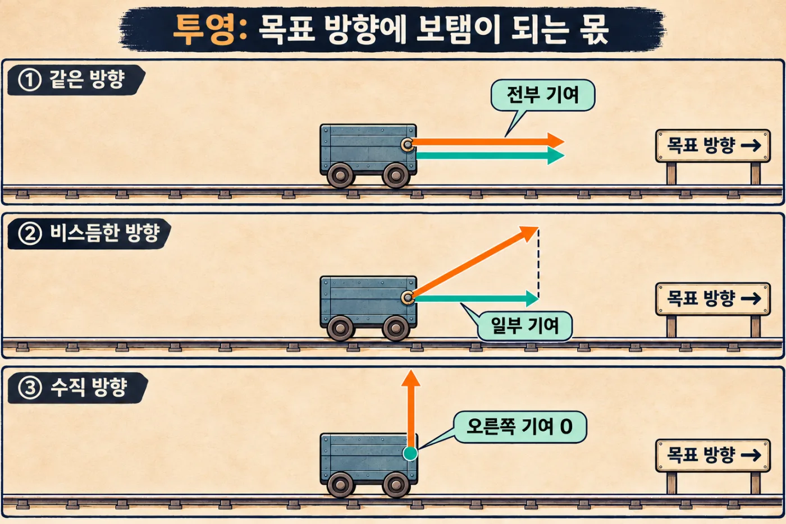
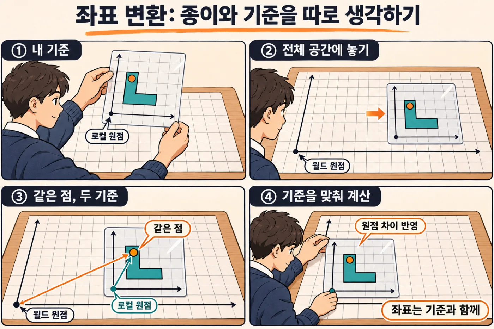

공간과 움직임의 수학
게임 속 위치와 움직임을 숫자로
게임 속 캐릭터는 화면 위를 움직입니다. 컴퓨터는 캐릭터가 어디에 있는지를 숫자로 기억합니다. 오른쪽으로 몇 칸, 위로 몇 칸 하는 식입니다. 움직이고, 돌고, 벽에 튕기는 것도 모두 숫자 계산입니다. 이 장에서는 모눈종이에 화살표를 그려 가며 그 계산을 하나씩 알아봅니다. 공식을 외울 필요는 없습니다.
- 위치와 방향을 숫자와 화살표로 나타낼 수 있습니다.
- 화살표의 길이와 각도를 구할 수 있습니다.
- 물체를 옮기고, 돌리고, 키우는 계산을 설명할 수 있습니다.
- 두 지점 사이를 부드럽게 이동시키는 방법을 설명할 수 있습니다.
- AI가 만든 움직임 코드에서 좌표의 방향, 각도의 단위, 시간 계산을 확인할 수 있습니다.
23.1모눈종이 위의 세계: 좌표와 벡터#
게임 화면을 커다란 모눈종이라고 생각해 봅시다. 종이 한 곳에 점을 찍고 "여기부터 센다"고 정합니다. 이 기준점을 원점(origin)이라고 부릅니다.
원점에서 가로로 2칸, 세로로 1칸인 자리는 (2, 1)이라고 적습니다. 이 숫자 두 개가 좌표입니다. 앞의 가로 숫자를 x, 뒤의 세로 숫자를 y라고 부릅니다.
수학 시간에는 오른쪽으로 갈수록 x가, 위로 갈수록 y가 커집니다. 이렇게 원점의 자리와 숫자가 커지는 쪽을 정한 약속을 좌표계(coordinate system)라고 합니다.
내 캐릭터가 (2, 1)에, 보물이 (6, 4)에 있습니다. 보물까지 어느 쪽으로 얼마나 가야 할까요? 보물의 좌표에서 내 좌표를 빼면 됩니다. 가로는 6 − 2 = 4, 세로는 4 − 1 = 3입니다. "오른쪽으로 4칸, 위로 3칸"이고 (4, 3)이라고 적습니다.
(4, 3)을 그림으로 그리면 화살표가 됩니다. 화살표에는 "어느 쪽으로"와 "얼마나"가 함께 담겨 있습니다. 이렇게 방향과 크기를 함께 담은 값을 벡터(vector)라고 합니다. 아래에서는 쉽게 화살표라고 부릅니다.
화살표에는 출발점이 적혀 있지 않습니다. 쪽지에 그려 둔 그림처럼, 종이 위 어디에 갖다 대도 같은 화살표입니다.
같은 (4, 3)이라도 쓰임에 따라 세 가지로 읽습니다.
- 위치: 원점에서 오른쪽 4, 위 3인 자리
- 이동: 지금 자리에서 오른쪽 4, 위 3만큼
- 속도: 1초마다 오른쪽 4, 위 3씩
더할 때는 가로끼리, 세로끼리 더합니다. 내 위치에 이동을 더하면 (2, 1) + (4, 3) = (6, 4), 보물이 있는 자리입니다. 숫자 하나를 곱하면 방향은 그대로이고 길이만 바뀝니다. (4, 3) × 2 = (8, 6)은 같은 쪽으로 두 배 멀리 갑니다.
화면에서는 y가 아래로 커집니다
그림의 오른쪽을 다시 봅시다. 좌표는 똑같이 (2, 1)과 (6, 4)인데 화살표가 아래를 향합니다. 컴퓨터 화면은 글을 쓰는 공책처럼 왼쪽 위 구석이 원점이고, 아래로 갈수록 y가 커지는 일이 많습니다.
이 약속은 도구마다 다릅니다. 게임을 만드는 도구를 게임 엔진이라고 합니다(24장). 웹 화면과 여러 2D 게임 엔진(예: 고도의 2D 화면)은 y가 아래로 커집니다. 위로 커지는 엔진(예: 유니티)도 있습니다. 3D에서는 "위"가 y인 엔진과 z인 엔진으로 또 갈립니다.
y가 아래로 커지면 "위로 가기"는 y를 빼는 일이 됩니다. 뒤에서 배울 각도도 시계 방향으로 커집니다.
AI에게 움직임을 부탁할 때는 "y는 아래로 갈수록 커져"처럼 좌표계부터 알려 줍니다. 모르면 "이 도구에서 y는 어느 쪽으로 커져?" 하고 먼저 묻습니다. "위로 가라고 했는데 아래로 간다"면 좌표계를 확인합니다. 이 장의 예는 y가 위로 커지는 좌표계를 씁니다.
23.2화살표의 길이: 대각선은 왜 빨라질까#
방향키로 캐릭터를 움직이는 게임을 만든다고 합시다. 오른쪽 키를 누르면 화살표 (1, 0)을, 위 키를 누르면 (0, 1)을 만듭니다. 여기에 5를 곱해 1초에 5칸씩 가게 합니다. 이 5처럼 "얼마나 빨리"를 나타내는 숫자를 속력이라고 합니다.
두 키를 함께 누르면 두 화살표가 더해져 (1, 1)이 됩니다. 그런데 이때만 캐릭터가 눈에 띄게 빨라집니다. 화살표의 길이가 달라졌기 때문입니다. 모눈 한 칸의 대각선은 한 변보다 깁니다.
길이는 이렇게 구합니다. 가로 숫자를 두 번 곱하고, 세로 숫자도 두 번 곱해서 더합니다. 같은 수를 두 번 곱하는 것을 제곱이라고 합니다. 앞 절의 (4, 3)이라면 4 × 4 = 16, 3 × 3 = 9이고 더하면 25입니다.
이제 "어떤 수를 제곱하면 25가 될까"를 찾습니다. 5 × 5 = 25이니 답은 5입니다. 이렇게 찾은 수를 25의 제곱근이라 하고 √25 = 5라고 적습니다. 화살표 (4, 3)의 길이는 5입니다. 나와 보물 사이의 거리가 5칸이라는 뜻이기도 합니다.
(1, 1)의 길이도 구해 봅시다. 1 × 1 + 1 × 1 = 2입니다. 제곱해서 2가 되는 수는 1.414…로 끝없이 이어지는데, 줄여서 약 1.41이라고 적습니다. 여기에 속력 5를 곱했으니 대각선으로는 1초에 약 7.07칸을 갔습니다.
고치는 방법은 화살표를 자기 길이로 나누는 것입니다. (1, 1)의 두 숫자를 1.41로 나누면 (0.71, 0.71)이 됩니다. 방향은 그대로이고 길이만 1이 됩니다. 이 일을 정규화(normalization)라고 합니다.
길이가 1인 화살표는 "어느 쪽인가"만 알려 줍니다. 이런 화살표를 단위 벡터(unit vector)라고 합니다. 여기에 속력 5를 곱하면 속도가 됩니다. 이제 어느 쪽으로 가든 1초에 딱 5칸입니다.
AI가 쓴 코드에서는 normalize나 normalized라는 낱말이 정규화입니다. 방향키를 다루는 코드에 이 낱말이 보이지 않으면 "대각선으로 가면 더 빨라지지 않아?" 하고 물어봅니다.
아무 키도 누르지 않으면 화살표는 (0, 0)이고 길이는 0입니다. 0으로는 나눌 수 없습니다. 언어에 따라 ZeroDivisionError 같은 오류를 내며 멈추거나, 위치가 NaN(숫자가 아님)이라는 값이 되어 캐릭터가 화면에서 사라집니다. 길이가 0일 때는 나누지 않게 합니다.
거리만 견줄 때는 제곱근을 건너뜁니다
게임은 "괴물이 5칸 안으로 들어왔나?"를 괴물 수백 마리에게 1초에도 수십 번씩 묻습니다. 그런데 제곱근은 컴퓨터에게도 곱셈보다 오래 걸리는 계산입니다.
괴물까지의 화살표가 (3, 4)라고 합시다. 3 × 3 + 4 × 4 = 25입니다. 여기서 제곱근을 구하지 않고 멈춥니다. 대신 기준인 5를 제곱해 25로 만들고 둘을 견줍니다. 25는 25를 넘지 않으니 이 괴물은 5칸 안에 있습니다. 다른 괴물까지의 화살표가 (6, 2)라면 36 + 4 = 40입니다. 40은 25보다 크니 5칸 밖입니다.
제곱근을 구하기 전의 이 값을 제곱 거리(squared distance)라고 합니다. 거리는 0보다 작을 수 없어서, 제곱해도 어느 쪽이 더 큰지는 바뀌지 않습니다. 그래서 제곱근을 구해서 견줄 때와 답이 같습니다.
AI가 쓴 코드에서 length_squared처럼 이름에 squared(제곱한)가 들어간 것이 이 값입니다. 반대로 sqrt는 제곱근을 구하라는 뜻입니다.
제곱 거리는 반드시 제곱한 기준과 견줍니다. 제곱 거리 25를 5와 그대로 견주면 "5칸 밖"이라는 틀린 답이 나옵니다.
23.3각도: 방향을 숫자 하나로#
"대포를 60도 돌려라"처럼 방향을 각도 하나로 말하면 편할 때가 있습니다. 그래서 각도와 화살표를 서로 바꾸는 계산이 필요합니다.
원점을 중심으로 반지름이 1인 원을 그립니다. 오른쪽 끝 (1, 0)을 0°로 정하고, 시계 반대 방향으로 돌면서 각도를 잽니다. 위쪽 끝이 90°, 왼쪽 끝이 180°입니다.
각도에서 방향으로. 60°만큼 돌아간 점의 좌표를 재면 가로 0.5, 세로 0.87입니다. 각도를 넣으면 이 가로 좌표를 알려 주는 계산이 있습니다. 이름은 cos(코사인)이고, cos 60°는 0.5입니다.
세로 좌표를 알려 주는 계산은 sin(사인)이고, sin 60°는 0.87입니다. 계산기와 컴퓨터가 알려 주니 손으로 계산할 필요는 없습니다. 대포가 60°를 보고 있다면 포탄은 (0.5, 0.87) 방향으로 날아갑니다.
방향에서 각도로. 거꾸로 가는 계산은 atan2(에이탄투)입니다. 세로와 가로를 넣으면 각도가 나옵니다. atan2(0.87, 0.5)는 60°입니다. 세로(y)를 먼저 적는데 이 순서를 자주 틀립니다. 적까지의 화살표를 넣으면 대포가 몇 도를 봐야 하는지 나옵니다.
컴퓨터는 각도를 라디안으로 잽니다
컴퓨터의 cos, sin, atan2는 대개 도(°)가 아닌 다른 단위로 각도를 주고받습니다. 반지름이 1인 원 위를 걸어간 거리로 각도를 잽니다. 이 단위가 라디안(radian)입니다.
원의 둘레는 지름에 π(파이, 약 3.14)를 곱한 값입니다. 반지름이 1이면 지름이 2이니 한 바퀴는 2π, 약 6.28입니다. 그래서 360°는 2π 라디안, 180°는 π, 90°는 그 절반인 π/2입니다.
사람은 도가 익숙하고 계산은 라디안으로 하니 둘이 자주 섞입니다. 게임 엔진의 설정 화면에는 90처럼 도로 적는데, 코드에서는 같은 값을 라디안으로 다루는 일이 있습니다. atan2가 내놓는 답도 라디안이라, 60° 대신 1.05쯤이 나옵니다. 코드에 1.57, 3.14, 6.28 같은 숫자가 보이면 90°, 180°, 360°를 라디안으로 적은 것입니다.
45°를 넣으려고 sin(45)라고 쓰면 컴퓨터는 45라디안으로 알아듣습니다. 일곱 바퀴 넘게 돈 엉뚱한 각도입니다. 도를 라디안으로 바꿔 주는 기능이 따로 있으니, 도로 적은 각도는 그 기능을 거쳐서 넣습니다. AI가 만든 캐릭터가 엉뚱한 쪽을 보거나 팽이처럼 돈다면 "이 각도는 도야, 라디안이야?"부터 묻습니다.
브라우저에서 빈 탭을 열고 F12(맥은 Cmd + Option + I)를 눌러 개발자 도구를 엽니다. Console 칸에 자바스크립트라는 언어로 Math.sin(45)라고 치고 엔터를 누르면 0.85…가 나옵니다. 45를 라디안으로 읽은 답입니다. 이번에는 Math.sin(45 * Math.PI / 180)이라고 칩니다. *는 곱하기, /는 나누기, Math.PI는 π입니다. 도에 π를 곱하고 180으로 나누면 라디안이 됩니다. 답은 0.707…입니다. 앞 절에서 대각선 화살표를 길이 1로 맞췄을 때 본 0.71이 바로 sin 45°입니다.
23.4내적: 두 화살표가 같은 쪽을 보는가#
몰래 숨어 다니는 게임을 떠올려 봅시다. 경비병이 오른쪽을 보고 서 있습니다. 내가 경비병의 눈에 보이는지 게임은 어떻게 알까요?
화살표 두 개를 준비합니다. 하나는 경비병이 보는 쪽인 전방 (1, 0)입니다. 다른 하나는 경비병에서 상대 쪽으로 그은 방향입니다. 둘 다 길이를 1로 맞춥니다.
이제 가로끼리 곱하고, 세로끼리 곱해서, 둘을 더합니다. 상대 A의 방향이 (0.87, 0.5)라면 1 × 0.87 + 0 × 0.5 = 0.87입니다. 이 계산을 내적(dot product)이라 하고 기호로는 가운뎃점(·)을 씁니다. 답은 화살표가 아니라 숫자 하나입니다. 코드에서는 dot이라는 낱말로 나옵니다.
이 숫자는 두 화살표가 얼마나 같은 쪽을 보는지 알려 줍니다. 완전히 같은 방향이면 1, 직각이면 0, 정반대면 −1입니다.
경비병의 시야가 좌우로 60°까지라고 합시다. 시야 끝에 걸친 방향은 앞 절에서 본 (0.5, 0.87)입니다. 전방과 내적하면 1 × 0.5 + 0 × 0.87 = 0.5, 곧 cos 60°입니다. 이 0.5가 기준값입니다. 내적이 0.5 이상이면 보이고, 그보다 작으면 보이지 않습니다. A는 0.87이니 경비병에게 보입니다.
각도는 한 번도 구하지 않았습니다. 부호만 봐도 쓸모가 있습니다. 양수면 앞쪽, 음수면 뒤쪽입니다.
길이를 1로 맞추지 않으면 내적에 길이가 섞입니다. 멀리 있는 상대일수록 값이 커져서 0.5라는 기준이 쓸모없어집니다.
한 걸음 더왼쪽인지 오른쪽인지는 어떻게 알까요?
내적은 앞뒤만 알려 줍니다. A가 그림의 위쪽에 있든 아래쪽에 있든 똑같이 0.87입니다. 좌우는 외적(cross product)으로 가립니다. 가로와 세로를 엇갈려 곱해서 뺍니다.
전방 (1, 0)과 A 방향 (0.87, 0.5)라면 1 × 0.5 − 0 × 0.87 = 0.5입니다. y가 위로 커지는 좌표계에서 양수면 상대는 왼쪽에, 음수면 오른쪽에 있습니다.
23.5투영과 반사: 벽을 타고 미끄러지기, 튕겨 나가기#
게임에서 캐릭터가 벽을 향해 비스듬히 달립니다. 닿는 순간 딱 멈춰 버리면 답답합니다. 잘 만든 게임에서는 벽을 따라 스르륵 미끄러집니다. 공은 바닥에 닿으면 튕겨 오릅니다. 두 움직임 모두 화살표 하나를 두 몫으로 쪼개는 데서 나옵니다.

비스듬한 화살표에서 어떤 방향의 몫만 떼어 내는 일을 투영(projection)이라고 합니다. 만화의 초록 화살표가 투영입니다.
공이 속도 (3, −2)로 바닥에 떨어진다고 합시다. 1초에 오른쪽으로 3, 아래로 2씩 갑니다. 이 화살표를 바닥을 따르는 몫 (3, 0)과 바닥을 파고드는 몫 (0, −2)로 쪼갭니다. 파고드는 몫을 어떻게 하느냐에 따라 움직임이 갈립니다.
- 미끄러지기: 파고드는 몫을 버립니다.
(3, 0)만 남아 바닥을 따라 갑니다. - 튕기기: 파고드는 몫을 뒤집습니다.
(0, −2)가(0, 2)로 바뀌어(3, 2)가 됩니다.
바닥이 평평하면 눈으로 쪼갤 수 있습니다. 벽이 기울어 있으면 계산이 필요합니다. 먼저 벽이나 바닥에 수직으로 선 길이 1짜리 화살표를 준비합니다. 이것을 법선(normal)이라고 합니다. 평평한 바닥의 법선은 똑바로 위를 가리키는 (0, 1)입니다.
파고드는 몫은 앞 절의 내적으로 구합니다. 그림 아래쪽의 식이 그 계산입니다.
- 속도와 법선을 내적합니다. 3 × 0 + (−2) × 1 = −2입니다. 음수이니 바닥을 파고드는 쪽입니다.
- 법선에 이 숫자를 곱합니다.
−2 × (0, 1) = (0, −2), 그림의 "법선 몫"이자 파고드는 몫입니다. - 속도에서 이 몫을 한 번 빼면
(3, 0), 미끄러지기입니다. 두 번 빼면(3, 2), 튕기기입니다.
기울어진 벽도 그 벽의 법선만 넣으면 같은 순서로 계산합니다.
게임 엔진에는 이 계산이 이미 들어 있습니다. 식을 적어 줄 필요 없이 "벽에 닿으면 멈추지 말고 벽을 따라 미끄러지게 해 줘"라고 말하면 됩니다. 코드에서는 slide(미끄러지다), reflect나 bounce(튕기다) 같은 낱말로 나타납니다.
AI는 튕기기를 vy = -vy처럼 세로 속도 vy의 부호만 뒤집어 만들 때가 있습니다. 평평한 바닥에서는 맞지만 기울어진 벽에서는 엉뚱한 쪽으로 튑니다. 비탈이나 둥근 벽이 있다면 "법선을 써서 튕기게 해 줘"라고 말합니다.
23.6변환: 옮기고, 돌리고, 키우기#
게임에서는 물체를 옮기고, 키우고, 돌립니다. 이 셋을 묶어 변환(transform)이라고 부릅니다. 점 (1, 0)으로 하나씩 해 봅시다.
- 이동: 화살표를 더합니다. 오른쪽으로 2칸 옮기면
(1, 0) + (2, 0) = (3, 0)입니다. - 확대와 축소: 숫자를 곱합니다. 2배로 키우면
(1, 0) × 2 = (2, 0)입니다. - 회전: 원점을 중심으로 돌립니다. 시계 반대 방향으로 90° 돌리면
(1, 0)이(0, 1)로 갑니다. 원의 오른쪽 끝이 위쪽 끝으로 간 것입니다.
순서를 바꾸면 결과가 달라집니다
점 (1, 0)에 "90° 회전"과 "오른쪽으로 2칸 이동"을 해 봅니다. 한 번은 회전부터, 한 번은 이동부터 합니다.
- 회전 먼저:
(1, 0)→(0, 1)→(2, 1) - 이동 먼저:
(1, 0)→(3, 0)→(0, 3)
회전은 언제나 원점을 중심으로 돕니다. 먼저 옮기면 원점에서 3칸 떨어진 채로 크게 돌게 됩니다. 줄을 길게 잡고 돌수록 큰 원을 그리는 것과 같습니다.
그림을 돌렸는데 제자리에서 돌지 않고 한쪽 모서리를 축으로 크게 돈다면 이 때문입니다. 그림의 원점이 모서리에 있는 것입니다. AI에게 "그림의 한가운데를 축으로 돌려 줘"라고 말합니다.
변환은 순서가 바뀌면 결과도 바뀝니다. 게임에서는 보통 확대, 회전, 이동 순서로 합니다. 제자리에서 키우고 돌린 다음, 마지막에 놓을 자리로 옮깁니다.
변환을 표로 적어 두기
90° 회전은 "새 x는 −y, 새 y는 x"라는 규칙으로 적을 수 있습니다. (3, 0)을 넣으면 (0, 3)이 나옵니다. 이런 규칙에서 숫자만 뽑아 표로 적어 둔 것을 행렬(matrix)이라고 합니다.
표로 적으면 여러 변환을 하나로 합칠 수 있습니다. "키우고, 돌리고, 옮기기"를 미리 표 하나로 합쳐 두면 점이 만 개여도 점마다 표 하나만 쓰면 됩니다. 같은 계산을 수없이 되풀이하는 일은 1장에서 본 GPU가 가장 잘합니다.
한 걸음 더3D 게임에서는 회전을 어떻게 적어 둘까요?
모눈종이 위의 회전은 "몇 도"라는 숫자 하나면 됩니다. 3D 게임의 비행기는 고개를 들 수도, 좌우로 틀 수도, 옆으로 기울 수도 있습니다. 이 세 가지를 각도 세 개로 적어 두면 될 것 같지만 말썽이 생깁니다. 어느 것부터 돌리느냐에 따라 결과가 달라집니다. 또 비행기가 고개를 똑바로 위로 들면 "좌우로 틀기"와 "옆으로 기울기"가 똑같은 회전이 되어 버립니다. 각도는 셋인데 돌릴 수 있는 방법은 둘로 줄어듭니다. 이 일을 짐벌 락(gimbal lock)이라고 부릅니다.
그래서 많은 게임 엔진은 3D 회전을 숫자 네 개로 묶어 기억합니다. 이 묶음을 쿼터니언(quaternion)이라고 합니다. 네 숫자는 각도가 아니어서 눈으로 봐서는 뜻을 알기 어렵습니다. 그래서 직접 고치지 않고, "왼쪽으로 90° 돌린 회전을 만들어 줘" 하는 기능을 불러서 씁니다.
AI가 쓴 3D 게임 코드에서 Quaternion이라는 낱말이 보이면 "회전을 담은 값"이라고 읽으면 됩니다. 네 숫자 가운데 하나에 90 같은 각도를 바로 넣은 코드는 틀린 것이니 되물어 보세요.
23.7누구 기준인가: 로컬 좌표와 월드 좌표#
"내 자리는 셋째 줄 둘째 칸이야." 이 말은 어느 교실인지 모르면 쓸모가 없습니다. 좌표도 어느 원점에서 쟀는지 알아야 뜻이 통합니다. 게임에는 모눈종이가 여러 장 겹쳐 있습니다.

게임 세계 전체에 깔린 큰 모눈종이로 잰 좌표를 월드 좌표(world coordinates)라고 합니다. 만화의 책상입니다.
물체 하나에 붙어 다니는 작은 모눈종이로 잰 좌표는 로컬 좌표(local coordinates)라고 합니다. 만화의 투명 종이입니다.
탱크가 월드 (5, 1)에 있습니다. 포신(대포의 긴 통) 끝은 탱크를 기준으로 (2, 2)에 있습니다. 포신 끝의 월드 좌표는 둘을 더한 (5 + 2, 1 + 2) = (7, 3)입니다.
탱크가 움직여도 포신 끝의 로컬 좌표 (2, 2)는 바뀌지 않습니다. 버스가 달려도 내 좌석 번호는 그대로인 것과 같습니다. 탱크의 위치만 고치면 딸린 부품이 모두 따라옵니다. 탱크를 부모, 포신을 자식이라고 부릅니다.
탱크가 돌아가 있다면 그냥 더하면 안 됩니다. 앞 절의 순서대로 먼저 돌리고 나서 옮깁니다. 탱크가 시계 반대 방향으로 90° 돌았다면 (2, 2)를 (−2, 2)로 돌린 다음 (5, 1)을 더해 (3, 3)을 얻습니다.
카메라도 모눈종이 한 장입니다. 화면에는 카메라를 기준으로 잰 자리가 그려집니다. 카메라가 월드 (3, 1)에 있다면 포신 끝은 카메라 기준으로 (7, 3) − (3, 1) = (4, 2)입니다. 카메라가 오른쪽으로 가면 세상이 왼쪽으로 밀려 보이는 까닭이 이 뺄셈입니다.
서로 다른 모눈종이에서 잰 좌표끼리는 그대로 더하거나 빼거나 비교하지 않습니다. 먼저 한 기준으로 옮깁니다.
"화면을 눌렀는데 캐릭터가 엉뚱한 곳으로 간다"면 여기부터 봅니다. 화면 기준인 누른 자리와 월드 기준인 캐릭터 자리를 그대로 뺀 경우가 많습니다. 카메라가 움직인 뒤부터 어긋나기 시작했다면 더욱 그렇습니다. AI에게 "누른 자리를 월드 좌표로 바꾼 다음에 써 줘"라고 말합니다.
코드에서는 이름으로 기준을 가늠합니다. 이름에 local이 붙으면 부모 기준, global이나 world가 붙으면 월드 기준, screen이 붙으면 화면 기준입니다.
한 걸음 더월드 좌표를 로컬 좌표로 되돌리려면 어떻게 할까요?
지금까지는 로컬 좌표를 월드 좌표로 바꿨습니다. 거꾸로 가려면 변환을 되돌려야 합니다. 이것을 역변환(inverse transform)이라고 합니다.
요령은 마지막에 한 일부터 거꾸로 푸는 것입니다. 양말을 신고 신발을 신었다면 신발부터 벗는 것과 같습니다.
물체의 모눈종이에서 2인 자리로 해 봅시다. 물체를 3배로 키우면 6이 되고, 오른쪽으로 10 옮기면 월드에서는 16입니다. 되돌릴 때는 먼저 10을 빼서 6을 만들고, 그다음 3으로 나눠 2를 얻습니다. 16을 3으로 먼저 나누면 옮긴 10까지 함께 나뉘어 틀린 답이 나옵니다.
화면에서 누른 자리를 게임 세계의 자리로 바꾸는 일도 역변환입니다.
23.8보간: 두 값 사이를 섞기#
게임 속 문은 한순간에 열리지 않고 스르륵 열립니다. 그러려면 닫힌 자리와 열린 자리 사이의 값을 차례로 만들어야 합니다. 두 값 사이의 중간값을 구하는 일을 보간(interpolation)이라고 합니다.
가장 쉬운 방법은 두 값을 비율대로 섞는 것입니다. 시작값이 0, 끝값이 100이라고 합시다. 섞는 비율은 t라고 부릅니다. t가 0이면 시작값, 1이면 끝값, 0.5면 한가운데입니다. 식으로 적으면 이렇습니다.
섞은 값 = 시작값 + (끝값 − 시작값) × tt가 0.25라면 0 + (100 − 0) × 0.25 = 25입니다. 이 방법을 선형 보간이라 하고, 영어 이름을 줄여 lerp(러프)라고 부릅니다. 숫자뿐 아니라 좌표나 색에도 똑같이 씁니다.
같은 lerp라도 t를 어떻게 넣느냐에 따라 움직임이 달라집니다.
일정하게 가기. t에 지난 시간 ÷ 전체 시간을 넣습니다. 2초에 걸쳐 열리는 문이라면 1초가 지났을 때 t는 0.5이고, 문은 딱 절반 열립니다. 2초가 되면 t가 1이 되어 다 열립니다. 그 뒤에도 t가 계속 커지면 문이 끝값을 지나쳐 버립니다. t는 1에서 멈추게 합니다.
천천히 출발하고 천천히 멈추기. t를 그대로 쓰지 않고, 처음과 끝에서는 조금씩 변하도록 한 번 바꿔서 넣습니다. 일정하게 가면 25에 있을 때 이 방법으로는 15.6에 있습니다. 버스가 서서히 출발해 서서히 멈추는 것처럼 자연스럽습니다. 이렇게 t를 바꿔 주는 일을 이징(easing)이라고 합니다. 그림에 적힌 ease in-out은 출발할 때(in)도 멈출 때(out)도 천천히 한다는 뜻입니다. 코드에서는 ease나 tween이라는 낱말로 나옵니다.
따라가기. 매번 지금 값을 시작값으로, 목표를 끝값으로 삼아 t = 0.5로 섞기를 되풀이합니다. 남은 거리의 절반씩 다가갑니다. 0에서 100으로 간다면 50, 75, 87.5로 갑니다. 처음엔 빠르고 갈수록 느려집니다. 카메라가 캐릭터를 따라갈 때 흔히 씁니다. 다만 "몇 초에 도착한다"는 약속이 없습니다.
AI에게 "부드럽게 움직여 줘"라고만 하면 어느 방법이 나올지 모릅니다. 정해진 시간에 끝나야 하는지, 계속 따라가야 하는지를 먼저 말해 주세요.
한 걸음 더매끄러운 곡선은 어떻게 그릴까요?
점 세 개 (0, 0), (2, 4), (4, 0)이 있습니다. t가 0.5일 때 앞의 두 점을 섞으면 (1, 2), 뒤의 두 점을 섞으면 (3, 2)입니다. 이 둘을 다시 섞으면 (2, 2)입니다.
t를 0에서 1까지 움직이면 이 점이 매끄러운 곡선을 그립니다. 이것이 베지에 곡선(Bézier curve)입니다. 글자의 둥근 윤곽이 이렇게 만들어집니다.
23.9시간: Δt를 곱하지 않으면 생기는 일#
만화 영화는 조금씩 다른 그림을 빠르게 넘겨 보여 줍니다. 게임도 1초에 수십 번 화면을 새로 그립니다. 그 그림 한 장을 프레임(frame)이라고 합니다. 1초에 그리는 장수는 fps로 적습니다. 30fps는 1초에 30장이라는 뜻입니다.
움직임은 프레임마다 위치를 조금씩 고쳐서 만듭니다. 아래는 파이썬(Python)이라는 프로그래밍 언어로 쓴 코드 한 줄입니다. 코드를 처음 본다면 초코딩 기초를 먼저 보세요.
x += 5 # 프레임마다 5씩x는 캐릭터의 가로 위치이고, x += 5는 "x에 5를 더하라"는 뜻입니다. # 뒤의 글은 사람이 읽으라고 적어 둔 메모입니다.
이 한 줄 때문에 빠른 컴퓨터에서는 게임이 두 배로 빨라집니다. 0.1초 동안을 따져 봅시다. 30fps인 컴퓨터는 3장을 그리니 5 × 3 = 15를 갑니다. 60fps인 컴퓨터는 6장을 그리니 5 × 6 = 30을 갑니다.
고치려면 속도를 "1초에 얼마"로 정하고, 지난 프레임부터 지금까지 흐른 시간을 곱합니다. 이 시간을 델타 타임(delta time)이라 하고 dt 또는 Δt로 적습니다. Δ는 "델타"라고 읽습니다. 앞의 파이썬 코드를 이렇게 고칩니다.
x += 300 * dt # 1초에 300, 그중 이번 프레임 몫*는 곱하기입니다. 60fps라면 dt가 1/60초이니 한 프레임에 300 ÷ 60 = 5를 갑니다. 30fps라면 dt가 1/30초이니 10을 갑니다. 걸음 크기는 달라도 0.1초 뒤에는 똑같이 30입니다.
실제 코드에서는 이 값이 dt, delta, deltaTime 같은 이름으로 나옵니다. 위치나 각도를 고치는 줄에 이 이름이 곱해져 있는지 봅니다.
속도는 "1초에 얼마"로 정하고, 위치에 더할 때 dt를 한 번 곱합니다.
게임 엔진에는 캐릭터를 옮겨 주는 기능이 들어 있습니다. 그 가운데에는 속도만 알려 주면 안에서 dt를 곱해 주는 것이 있습니다. 여기에 dt를 이미 곱한 값을 주면 dt가 두 번 곱해집니다. 60fps라면 속도 300에 dt를 곱한 5를 주게 되고, 엔진은 이것을 "1초에 5"로 알아듣습니다. 캐릭터가 60배 느려져 거의 움직이지 않습니다. AI가 만든 코드에서는 dt가 빠졌는지와 함께 두 번 들어가지 않았는지도 물어보세요.
dt의 단위도 봅니다. 초로 주는 도구가 많지만 1000분의 1초(밀리초)로 주는 곳도 있습니다. 16.7 같은 값을 초인 줄 알고 곱하면 캐릭터가 1000배 빠르게 날아갑니다.
앞 절의 "남은 거리의 절반씩 따라가기"도 컴퓨터마다 빠르기가 달라집니다. 프레임마다 한 번씩 절반을 가면, 프레임이 많은 컴퓨터에서 카메라가 더 빨리 따라붙습니다. AI에게 따라가기를 부탁할 때는 "섞는 비율을 dt에 맞춰 정해 줘"라고 덧붙이세요.
AI 챗봇에 "방향키로 캐릭터를 움직이는 2D 게임 코드를 짧게 써 줘"라고만 보내 봅니다. 받은 코드에서 두 가지를 찾습니다. 방향의 길이를 1로 맞추는 normalize가 있나요? 위치를 고치는 줄에 dt나 delta가 곱해져 있나요? 보이지 않는 것이 있으면 "대각선으로 가면 더 빨라지지 않아?", "빠른 컴퓨터에서도 같은 속도야?" 하고 물어봅니다.
한 걸음씩 끊어서 계산합니다
프레임마다 "속도 × dt"만큼 위치를 옮기는 이 계산법에는 이름이 있습니다. 오일러 적분(Euler integration)입니다. 오일러는 수학자의 이름이고, 적분은 잘게 나눈 조각을 차곡차곡 더한다는 뜻입니다.
이 계산은 한 걸음 동안에는 속도가 그대로라고 칩니다. 그런데 떨어지는 공은 걸음 도중에도 계속 빨라집니다. 그래서 실제 움직임과 조금씩 어긋나고, 걸음(dt)이 클수록 더 어긋납니다. 게임이 떨어지고 부딪히는 계산을 작고 일정한 걸음으로 하는 까닭입니다. 이 이야기는 24장에서 이어집니다.
식은 내가 넣어 준 것만 압니다
x = 2 + 5 × t는 2에서 출발해 1초에 5칸씩 가는 캐릭터의 위치입니다. t는 흐른 시간(초)입니다. 1초 뒤에는 2 + 5 × 1 = 7, 2초 뒤에는 2 + 5 × 2 = 12입니다.
그런데 8에 벽이 있다면 어떨까요? 식은 아무렇지 않게 12를 내놓습니다. 캐릭터가 벽을 뚫고 지나갑니다.
수식은 세상에서 필요한 부분만 골라 줄여 놓은 것입니다. 이것을 모델(model)이라고 합니다. 이 모델에는 위치와 속도만 있고 벽은 없습니다.
"벽을 넘지 못한다"는 조건은 따로 넣어 주어야 합니다. 이렇게 꼭 지켜야 하는 조건을 제약(constraint)이라고 합니다. 파이썬 코드로 적으면 이렇습니다.
x += v * dt
if x > 8: # 벽을 넘었다면
x = 8 # 벽 앞으로 되돌리고
v = 0 # 멈춘다- 첫 줄은 속도
v에 dt를 곱해 위치x에 더합니다. if x > 8:은 "만약 x가 8보다 크면"이라는 뜻입니다. 그럴 때만 아래 두 줄을 합니다.x = 8은 위치를 벽 앞으로 되돌리고,v = 0은 속도를 0으로 만들어 캐릭터를 세웁니다.
AI가 그럴듯한 움직임 식을 내놓으면 "이 식이 모르는 것이 무엇인가"를 물어보세요. 벽, 화면 끝, 길이가 0인 화살표 같은 것들입니다.
23.10수식 대신 말로 시키기#
수식을 적어 줄 필요는 없습니다. 바라는 움직임을 빈틈없는 말로 적어 주면 AI가 알맞은 계산을 고릅니다. 빈틈없는 말에는 기준과 단위와 끝나는 때가 들어 있습니다.
| 바라는 움직임 | AI에게 할 말 | 쓰이는 계산 |
|---|---|---|
| 적이 나를 쳐다본다 | "적이 플레이어 쪽을 바라보게 해 줘. 적 그림은 오른쪽을 보고 그려져 있어." | 빼기, atan2 |
| 어느 쪽으로 가든 같은 빠르기 | "대각선도 같은 속력이 되게 방향의 길이를 1로 맞춰 줘." | 정규화 |
| 벽에 닿아도 멈추지 않는다 | "벽에 닿으면 벽을 따라 미끄러지게 해 줘." | 투영 |
| 앞에 있는 것만 알아챈다 | "앞쪽 좌우 60° 안이고 5칸보다 가까울 때만 알아채게 해 줘." | 내적, 제곱 거리 |
| 누른 곳으로 간다 | "누른 자리를 월드 좌표로 바꿔서 그곳으로 가게 해 줘." | 좌표 바꾸기 |
| 문이 스르륵 열린다 | "2초에 걸쳐 열리게 해 줘. 천천히 출발하고 천천히 멈추게." | 보간, 이징 |
| 카메라가 따라온다 | "카메라가 플레이어를 부드럽게 따라가게 해 줘. 프레임 수가 달라도 똑같이." | 따라가기, Δt |
첫 줄에 "오른쪽을 보고 그려져 있어"는 왜 붙였을까요? atan2가 알려 주는 각도는 오른쪽이 0°입니다. 그림이 위를 보고 그려져 있으면 적은 늘 90° 틀어진 쪽을 봅니다. AI는 그림이 어느 쪽을 보는지 모를 수 있으니 말로 알려 줍니다.
헷갈리기 쉬운 짝#
| 짝 | 차이 |
|---|---|
| 위치 / 방향 | 원점에서 잰 자리 / 어디에 갖다 대도 같은 화살표 |
| 방향 / 속력 | 길이가 1인 화살표 / 1초에 가는 거리. 둘을 곱하면 속도 |
| 도 / 라디안 | 한 바퀴가 360 / 한 바퀴가 약 6.28. 컴퓨터의 계산은 대개 라디안 |
| 거리 / 제곱 거리 | 제곱근까지 구한 값 / 제곱근을 구하기 전의 값. 제곱한 기준과 견줌 |
| 내적 / 외적 | 앞인지 뒤인지 / 왼쪽인지 오른쪽인지 |
| 로컬 좌표 / 월드 좌표 | 물체에 붙은 모눈종이로 잰 값 / 세계 전체의 모눈종이로 잰 값 |
| 시간 맞춰 보간 / 따라가기 | t가 0에서 1로 가며 제시간에 끝남 / 남은 거리의 절반씩, 끝나는 시각 없음 |
실전 사례#
지우는 AI와 함께 방향키로 캐릭터를 움직이는 게임을 만들었습니다. 그런데 대각선으로 갈 때 유난히 빠르고, 친구의 새 컴퓨터에서는 조종하기 힘들 만큼 빠릅니다.
- 문제를 둘로 나눕니다. 대각선 문제와 컴퓨터 문제는 까닭이 다를 수 있습니다.
- 방향 화살표의 길이를 화면에 적어 봅니다. 오른쪽만 누르면 1, 오른쪽과 위를 함께 누르면 1.41이 나옵니다. 정규화가 빠져 있습니다.
- 방향과 속력을 나눕니다. 화살표를 길이로 나눠 방향을 만들고 속력 5를 곱합니다. 길이가 0일 때는 나누지 않습니다.
- 위치를 고치는 줄에서 dt를 찾습니다.
x += vx뿐입니다. 가로 속도vx에 dt가 곱해져 있지 않습니다. 속력을 "1초에 5칸"으로 정하고x += vx * dt로 고칩니다. - 숫자로 확인합니다. 직선과 대각선으로 10초씩 간 거리를 30fps, 60fps, 120fps에서 잽니다. 여섯 값이 모두 50칸 근처면 끝입니다.
움직임이 이상할 때는 대개 방향, 크기, 시간 가운데 둘이 섞여 있습니다. 셋을 따로 적으면 어디가 틀렸는지 보입니다.
한눈에 정리#
- 벡터는 방향과 크기를 함께 담은 화살표입니다. 도착할 곳에서 지금 있는 곳을 빼서 구합니다.
- 좌표계는 도구마다 다릅니다. y가 어느 쪽으로 커지는지 AI에게 먼저 알려 줍니다.
- 화살표를 자기 길이로 나누면 길이가 1이 됩니다. 이 정규화로 방향과 속력을 나눕니다.
- 거리가 기준보다 가까운지만 볼 때는 제곱근을 구하지 않습니다. 제곱 거리를 제곱한 기준과 견줍니다.
- cos과 sin은 각도를 화살표로, atan2는 화살표를 각도로 바꿉니다. 컴퓨터는 대개 각도를 라디안으로 재니, 도와 섞이지 않았는지 봅니다.
- 내적은 두 화살표가 얼마나 같은 쪽을 보는지 알려 줍니다. 내적으로 화살표를 쪼개면 미끄러지기와 튕기기가 나옵니다.
- 옮기기, 돌리기, 키우기가 변환입니다. 순서가 바뀌면 결과도 바뀝니다.
- 좌표는 기준과 함께 다닙니다. 로컬 좌표와 월드 좌표를 섞어 계산하지 않습니다.
- 보간은 두 값을 비율대로 섞는 일입니다.
- 속도에 Δt를 곱해야 어느 컴퓨터에서나 같은 빠르기로 움직입니다. 빠뜨려도 틀리고, 두 번 곱해도 틀립니다.
확인 문제#
운동장에 모눈을 그렸습니다. 나는 (1, 2)에, 친구는 (4, 6)에 서 있습니다. 친구에게 가려면 어느 쪽으로 몇 칸씩 가야 할까요? 똑바로 걸어가면 몇 칸 거리일까요?
정답 보기
친구의 좌표에서 내 좌표를 뺍니다. (4 − 1, 6 − 2) = (3, 4)이니 오른쪽으로 3칸, 위로 4칸입니다. 거리는 이 화살표의 길이입니다. 3 × 3 + 4 × 4 = 25이고, 제곱해서 25가 되는 수는 5이니 5칸입니다.
술래잡기 게임에서 술래는 위쪽 (0, 1)을 보고 서 있습니다. 술래에서 나에게 그은 화살표는 (3, −4)입니다. 나는 술래의 앞쪽에 있을까요, 등 뒤에 있을까요?
정답 보기
내적을 구합니다. 0 × 3 + 1 × (−4) = −4입니다. 음수이니 나는 술래의 등 뒤에 있습니다. 앞뒤만 가릴 때는 부호만 보면 됩니다.
AI가 만든 게임에서 대포가 똑바로 위를 보게 하려고 각도에 90을 넣었습니다. 그런데 대포가 왼쪽 위 엉뚱한 곳을 봅니다. 무엇부터 의심할까요? 어떻게 고칠까요?
정답 보기
각도의 단위입니다. 그 자리가 라디안을 받는다면 90은 열네 바퀴 넘게 돈 각도입니다. AI에게 "이 각도는 도야, 라디안이야?" 하고 묻습니다. 라디안이라면 90°에 해당하는 π/2, 약 1.57을 넣거나 도를 라디안으로 바꿔 주는 기능을 거칩니다.
게임에서 성문이 정확히 2초 만에 열리게 하고 싶습니다. "남은 거리의 절반씩 다가가기"를 되풀이하면 될까요? 안 된다면 어떻게 해야 할까요?
정답 보기
안 됩니다. 절반씩 다가가면 50, 75, 87.5로 가까워지기만 하고 끝나는 시각이 없습니다. 시작값과 끝값을 정해 두고 t에 지난 시간 ÷ 2를 넣습니다.
같은 게임인데 형의 새 컴퓨터에서는 캐릭터가 내 컴퓨터보다 두 배로 빨리 달립니다. 코드에는 x += 5라고 적혀 있습니다. 왜 그럴까요? 어떻게 고칠까요?
정답 보기
프레임마다 5씩 더하기 때문입니다. 형의 컴퓨터는 1초에 그리는 장수가 두 배라서 더하는 횟수도 두 배입니다. 속도를 "1초에 얼마"로 정하고 x += 300 * dt처럼 dt를 곱합니다.
AI에게 맡길 때#
움직이는 코드를 AI에게 부탁할 때는 "움직이게 해 줘"에서 멈추지 않습니다. 어느 쪽이 +인지, 얼마나 빠른지, 시간을 어떻게 재는지를 먼저 알려 주고, 결과를 숫자로 보여 달라고 합니다.
위에서 내려다보는 2D 게임에서 방향키로 캐릭터를 움직이는 코드를 만들어 줘. 화면은 아래로 갈수록 y가 커져. 속력은 1초에 300픽셀이야. 대각선으로 가도 빨라지지 않게 방향 화살표의 길이를 1로 맞춰 줘. 아무 키도 누르지 않을 때도 고장 나지 않게 해 줘. 컴퓨터가 빠르든 느리든 같은 빠르기가 되게 dt를 곱해 줘. 다 만들면 직선과 대각선으로 10초씩 움직인 거리를 30fps와 60fps에서 재서 표로 보여 줘.
받은 답에서 확인할 것
- 표의 네 값이 모두 3,000픽셀 근처인가
- 위 키를 누르면 화면에서 정말 위로 가는가
- 위치를 고치는 줄에 dt가 한 번만 곱해져 있는가
- 각도를 쓰는 곳마다 도인지 라디안인지 밝혀 두었는가
- 화면, 월드, 로컬처럼 기준이 다른 좌표를 그대로 더하거나 빼지 않았는가
AI가 자주 하는 실수
- dt를 빠뜨리거나 두 번 곱합니다. 내 컴퓨터에서는 멀쩡해 보이니, 프레임 수를 바꿔 가며 잰 숫자를 받아 봅니다.
- 대각선의 길이를 맞추지 않습니다. 직선과 대각선으로 같은 시간 동안 간 거리를 견줍니다.
- 도와 라디안, y의 위아래를 섞습니다. 엉뚱한 쪽을 보거나 거꾸로 움직이면 단위와 좌표계부터 묻습니다.
- 재 보지 않고 "같은 속도로 움직입니다"라고 답합니다. 실제로 돌려서 잰 값인지 되묻습니다(30장).
용어 정리#
- 원점origin
-
좌표를 셀 때 기준으로 삼는 점. 좌표는
(0, 0). - 좌표
- 원점에서 가로로 몇, 세로로 몇인지 적은 숫자 묶음.
- 좌표계coordinate system
- 원점의 자리와 숫자가 커지는 쪽을 정한 약속.
- 벡터vector
- 방향과 크기를 함께 담은 값. 숫자 묶음으로 적고 화살표로 그린다.
- 속력speed
- "얼마나 빨리"를 나타내는 숫자 하나. 방향에 곱하면 속도가 된다.
- 제곱근square root
- 제곱하면(두 번 곱하면) 그 수가 되는 수. 25의 제곱근은 5.
- 정규화normalization
- 화살표를 자기 길이로 나눠 길이를 1로 만드는 일.
- 단위 벡터unit vector
- 길이가 1인 화살표. 방향만 나타낼 때 쓴다.
- 제곱 거리squared distance
- 제곱근을 구하기 전의 거리 값. 가까운지 먼지만 견줄 때 쓴다.
- 코사인, 사인cos, sin
- 각도를 넣으면 반지름 1인 원 위 점의 가로 좌표(cos)와 세로 좌표(sin)를 알려 주는 계산.
- atan2
- 세로와 가로를 넣으면 그 화살표의 각도를 알려 주는 계산.
- 라디안radian
- 원 위를 걸어간 거리로 재는 각도 단위. 한 바퀴가 약 6.28.
- 내적dot product
- 가로끼리, 세로끼리 곱해서 더한 값. 두 화살표가 얼마나 같은 쪽을 보는지 알려 준다.
- 외적cross product
- 상대가 왼쪽에 있는지 오른쪽에 있는지 부호로 알려 주는 계산.
- 투영projection
- 화살표에서 어떤 방향의 몫만 떼어 내는 일.
- 법선normal
- 벽이나 바닥에 수직으로 세운 길이 1짜리 화살표.
- 변환transform
- 물체를 옮기고, 키우고, 돌리는 일을 묶어 부르는 말.
- 행렬matrix
- 변환 규칙을 담아 둔 숫자 표.
- 쿼터니언quaternion
- 3D 회전을 숫자 네 개로 담은 값.
- 월드 좌표world coordinates
- 게임 세계 전체의 원점을 기준으로 잰 좌표.
- 로컬 좌표local coordinates
- 물체에 붙어 다니는 모눈종이로 잰 좌표.
- 부모와 자식parent, child
- 탱크와 포신처럼, 부모가 움직이면 자식이 함께 따라가는 사이.
- 역변환inverse transform
- 변환을 거꾸로 되돌리는 일. 마지막에 한 것부터 푼다.
- 보간interpolation
- 두 값 사이의 중간값을 구하는 일.
- 선형 보간lerp, linear interpolation
- 두 값을 비율 t만큼 섞어 중간값을 구하는 일.
- 이징easing
- 천천히 출발하고 천천히 멈추도록 섞는 비율 t를 바꿔 주는 일.
- 베지에 곡선Bézier curve
- 점 몇 개를 거듭 섞어서 그리는 매끄러운 곡선.
- 프레임frame
- 게임이 새로 그리는 화면 한 장. 1초에 그리는 장수가 fps.
- 델타 타임delta time, Δt
- 지난 프레임부터 이번 프레임까지 흐른 시간. 속도에 곱해서 쓴다.
- 오일러 적분Euler integration
- 프레임마다 속도에 dt를 곱해 위치에 더하는 계산법.
- 모델model
- 세상에서 필요한 부분만 골라 식으로 줄여 놓은 것.
- 제약constraint
- "벽을 넘지 못한다"처럼 꼭 지켜야 하는 조건.
더 읽을거리#
- Godot — Vector math — 고도(Godot)라는 게임 엔진의 영어 설명서입니다. 길이, 정규화, 내적을 그림으로 보여 줍니다.
- Godot — Interpolation — 선형 보간과 부드럽게 따라가기의 예가 있습니다.